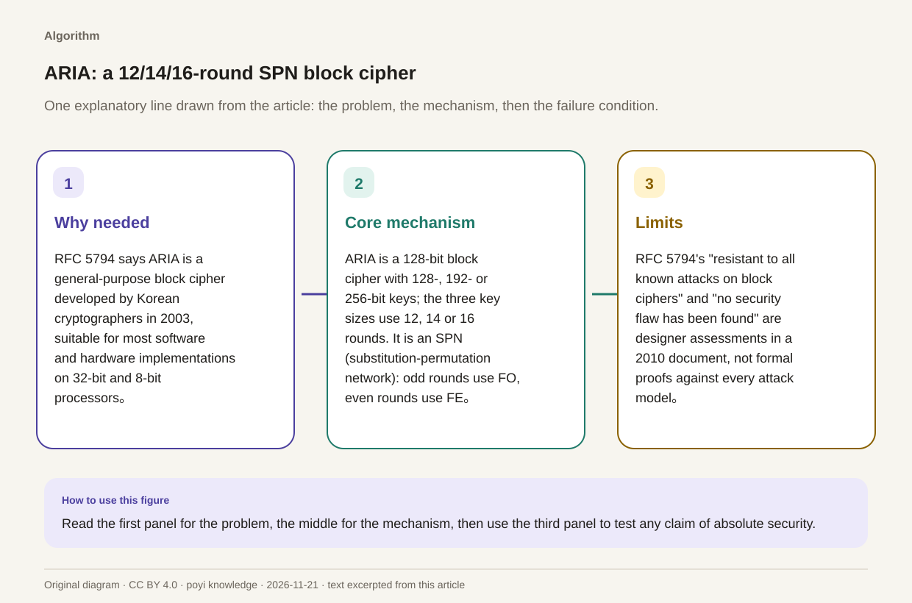
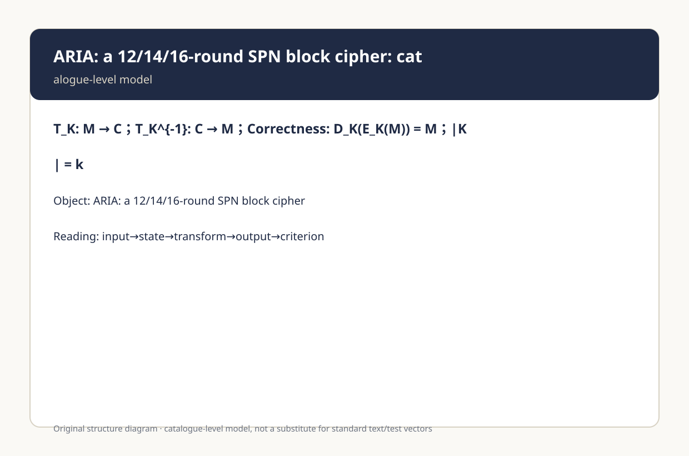

Principles
Algorithm: ARIA (ARIA 韩国分组密码). ARIA is a 128-bit block cipher with 128-, 192- or 256-bit keys; the three key sizes use 12, 14 or 16 rounds. It is an SPN (substitution-permutation network): odd rounds use FO, even rounds use FE, and the final round performs only SL2 and two key XORs. For a 128-bit key (12 rounds), encryption is:
P1 = FO(P, ek1)
P2 = FE(P1, ek2)
P3 = FO(P2, ek3)
P4 = FE(P3, ek4)
P5 = FO(P4, ek5)
P6 = FE(P5, ek6)
P7 = FO(P6, ek7)
P8 = FE(P7, ek8)
P9 = FO(P8, ek9)
P10 = FE(P9, ek10)
P11 = FO(P10, ek11)
C = SL2(P11 XOR ek12) XOR ek13
A 192-bit key uses 14 rounds: rounds 1 to 13 alternate FO/FE, and the final round is C = SL2(P13 XOR ek14) XOR ek15. A 256-bit key uses 16 rounds: rounds 1 to 15 alternate FO/FE, and the final round is C = SL2(P15 XOR ek16) XOR ek17. Decryption uses the same process with the encryption round keys ek replaced by the decryption round keys dk. The two round functions are:
FO(D, RK) = A(SL1(D XOR RK))
FE(D, RK) = A(SL2(D XOR RK))
SL1 applies SB1, SB2, SB3 and SB4 cyclically to the sixteen bytes; SL2 applies SB3, SB4, SB1 and SB2:
SL1: y0=SB1(x0) y1=SB2(x1) y2=SB3(x2) y3=SB4(x3) ... y15=SB4(x15)
SL2: y0=SB3(x0) y1=SB4(x1) y2=SB1(x2) y3=SB2(x3) ... y15=SB2(x15)
SB1, SB2, SB3 and SB4 are four 8-bit S-boxes with 256 entries each. SB3 and SB4 are the inverses of SB1 and SB2, so SL2 is the inverse of SL1. The specification's examples are SB1(0x23)=0x26 and SB4(0xEF)=0xD3. The diffusion layer A applies fixed XOR combinations to the sixteen bytes:
y0 = x3 ^ x4 ^ x6 ^ x8 ^ x9 ^ x13 ^ x14
y1 = x2 ^ x5 ^ x7 ^ x8 ^ x9 ^ x12 ^ x15
y2 = x1 ^ x4 ^ x6 ^ x10 ^ x11 ^ x12 ^ x15
y3 = x0 ^ x5 ^ x7 ^ x10 ^ x11 ^ x13 ^ x14
y4 = x0 ^ x2 ^ x5 ^ x8 ^ x11 ^ x14 ^ x15
y5 = x1 ^ x3 ^ x4 ^ x9 ^ x10 ^ x14 ^ x15
y6 = x0 ^ x2 ^ x7 ^ x9 ^ x10 ^ x12 ^ x13
y7 = x1 ^ x3 ^ x6 ^ x8 ^ x11 ^ x12 ^ x13
y8 = x0 ^ x1 ^ x4 ^ x7 ^ x10 ^ x13 ^ x15
y9 = x0 ^ x1 ^ x5 ^ x6 ^ x11 ^ x12 ^ x14
y10 = x2 ^ x3 ^ x5 ^ x6 ^ x8 ^ x13 ^ x15
y11 = x2 ^ x3 ^ x4 ^ x7 ^ x9 ^ x12 ^ x14
y12 = x1 ^ x2 ^ x6 ^ x7 ^ x9 ^ x11 ^ x12
y13 = x0 ^ x3 ^ x6 ^ x7 ^ x8 ^ x10 ^ x13
y14 = x0 ^ x3 ^ x4 ^ x5 ^ x9 ^ x11 ^ x14
y15 = x1 ^ x2 ^ x4 ^ x5 ^ x8 ^ x10 ^ x15
A is an involution, so A(A(x))=x. For example, A maps 000102030405060708090A0B0C0D0E0F to 03020100050407060A0B08090C0D0E0F. The key schedule writes the master key K as KL||KR: KL is the leftmost 128 bits, and KR is the remaining bits right-padded with zeros to 128 bits. For a 128-bit key KR is zero; for a 192-bit key the low 64 bits of KR are zero; for a 256-bit key KR is the full right 128 bits. It then defines four 128-bit intermediates:
W0 = KL
W1 = FO(W0, CK1) XOR KR
W2 = FE(W1, CK2) XOR W0
W3 = FO(W2, CK3) XOR W1
CK1, CK2 and CK3 are selected from three constants according to key size:
C1 = 517CC1B727220A94FE13ABE8FA9A6EE0
C2 = 6DB14ACC9E21C820FF28B1D5EF5DE2B0
C3 = DB92371D2126E9700324977504E8C90E
128-bit: CK1=C1, CK2=C2, CK3=C3
192-bit: CK1=C2, CK2=C3, CK3=C1
256-bit: CK1=C3, CK2=C1, CK3=C2
The encryption round keys ek1..ek17 are built from 128-bit left and right rotations of W0..W3 combined by XOR:
ek1 = W0 ^ (W1 >>> 19) ek2 = W1 ^ (W2 >>> 19)
ek3 = W2 ^ (W3 >>> 19) ek4 = (W0 >>> 19) ^ W3
ek5 = W0 ^ (W1 >>> 31) ek6 = W1 ^ (W2 >>> 31)
ek7 = W2 ^ (W3 >>> 31) ek8 = (W0 >>> 31) ^ W3
ek9 = W0 ^ (W1 <<< 61) ek10 = W1 ^ (W2 <<< 61)
ek11 = W2 ^ (W3 <<< 61) ek12 = (W0 <<< 61) ^ W3
ek13 = W0 ^ (W1 <<< 31) ek14 = W1 ^ (W2 <<< 31)
ek15 = W2 ^ (W3 <<< 31) ek16 = (W0 <<< 31) ^ W3
ek17 = W0 ^ (W1 <<< 19)
The 12-, 14- and 16-round variants need 13, 15 and 17 round keys because the final round adds an extra key XOR. The decryption round keys are derived by reversing ek and applying A to the middle values:
dk1 = ek(n+1)
dk2 = A(ek n)
dk3 = A(ek n-1)
... dk n = A(ek2)
dk(n+1) = ek1

Why it matters
RFC 5794 says ARIA is a general-purpose block cipher developed by Korean cryptographers in 2003, suitable for most software and hardware implementations on 32-bit and 8-bit processors; it became the Korean standard block cipher (KS X 1213:2004) in 2004, is widely used in Korea especially for government-to-public services, and was included in PKCS #11 in 2007.
The Korean e-Government Standard Framework developer guide's standardization-trends section also states that ARIA was designated a national standard in 2004 under the national standards framework act, with standard number KS X 1213:2004. This agrees with RFC 5794's account.
RFC 5794 Section 3 says ARIA is designed to resist "all known attacks on block ciphers" and that analysis by the COSIC group at K.U.Leuven, Belgium found no security flaw. This is a 2010 RFC assessment, not a formal proof against every attack model.
Applications
TLS: RFC 6209 (April 2011, Informational) defines ARIA cipher suites for TLS 1.2 (RFC 5246), including CBC/SHA-2, GCM, elliptic-curve and PSK suites; it explicitly excludes SHA-1 suites. RFC 8446 (TLS 1.3) Appendix B.4 defines only five AEAD-based cipher suites (AES-128-GCM, AES-256-GCM, ChaCha20-Poly1305, AES-128-CCM and AES-128-CCM-8), with no ARIA suite; this article does not claim ARIA support in TLS 1.3.
OIDs: RFC 5794 Appendix B gives an ASN.1 OID module for ARIA, including id-sea and mode identifiers for ECB, CBC, CFB, OFB, CTR, CMAC, OCB2, GCM, CCM and key wrap with 128/192/256-bit keys. These identifiers show that ARIA is not only a paper algorithm but also has citable mode-level object identifiers.
Test vectors: RFC 5794 Appendix A gives three vectors, all with plaintext 00112233445566778899AABBCCDDEEFF:
128-bit key = 000102030405060708090A0B0C0D0E0F
ciphertext = D718FBD6AB644C739DA95F3BE6451778
192-bit key = 000102030405060708090A0B0C0D0E0F1011121314151617
ciphertext = 26449C1805DBE7AA25A468CE263A9E79
256-bit key = 000102030405060708090A0B0C0D0E0F101112131415161718191A1B1C1D1E1F
ciphertext = F92BD7C79FB72E2F2B8F80C1972D24FC
For the 128-bit key, Appendix A.1 also lists W0..W3, ek1..ek13 and P1..P11, so it checks the key schedule and round functions rather than only the final ciphertext. The implementation checks these intermediates entry by entry: for example W0=000102030405060708090A0B0C0D0E0F, W1=2AFBEA741E1746DD55C63BA1AFCEA0A5, ek1=D415A75C794B85C5E0D2A0B3CB793BF6, P1=7FC7F12BEFD0A0791DE87FA96B469F52 and P11=E7E0D2457ED73D23D481424095AFDCA0.

Limits & attacks
RFC 5794's "resistant to all known attacks on block ciphers" and "no security flaw has been found" are designer assessments in a 2010 document, not formal proofs against every attack model, and they do not guarantee that no better analysis will appear. This article does not expand them into an absolute security claim, and it does not cite unverified attack papers to claim that ARIA has been broken.
ARIA's deployment position needs to be stated carefully: it is a Korean national standard with a clear record of use in Korean government-to-public services and was included in PKCS #11 in 2007; RFC 6209 defines ARIA suites for TLS 1.2, but that RFC is Informational and TLS 1.3 has no ARIA suite. That is a national standard and one inclusion in PKCS #11 in 2007, not availability by default in every latest protocol.
At the implementation level, this article's teaching code performs byte-indexed lookups in SB1..SB4 and sixteen-byte XORs and is not constant-time; caches and timing may leak key-dependent access patterns. It does not generate keys and implements no mode of operation, IV management, padding, integrity protection or side-channel defence, so it must not be used to protect real data. ARIA defines only a block cipher; the protocol layer must handle those matters.
History
ARIA was developed by Korean cryptographers in 2003, became the Korean standard block cipher KS X 1213:2004 in 2004, and is widely used in Korea especially for government-to-public services; it was included in PKCS #11 in 2007. RFC 5794 was published in March 2010 with Informational category as an Independent Submission by J. Lee, J. Lee, J. Kim, D. Kwon and C. Kim (NSRI).
RFC 6209 added ARIA suites for TLS 1.2 in April 2011 with Informational category, including CBC/SHA-2, GCM, elliptic-curve and PSK families; RFC 8446 defined TLS 1.3 in 2018 with only five AEAD suites and no ARIA.
This article's ARIA entity is the 128-bit block cipher only; AES, Camellia and SEED are separate entities, TLS and PKCS #11 are protocols or interfaces that use ARIA, and RFC 5794 is an algorithm specification rather than the whole protocol stack.
Worked example & verification
Worked example
Take one published or standard test vector, record the input, the ordered steps and the byte-exact output, then compare with an independent implementation. Where no citable numeric vector is available, the entry records only structural steps and does not invent an output.
References
- Wikipedia search entry for ARIA 韩国分组密码. https://zh.wikipedia.org/w/index.php?search=ARIA%20%E9%9F%A9%E5%9B%BD%E5%88%86%E7%BB%84%E5%AF%86%E7%A0%81
- Handbook of Applied Cryptography (Menezes, van Oorschot, Vanstone). https://www.cacr.math.uwaterloo.ca/hac/